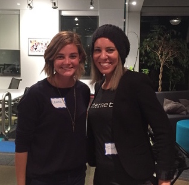

Welcome!
Welcome!
Get Connected
- Network: wifi network / Password: wifi password
Download
& Install
- Learner files (zip file): http://bit.ly/llc-ruby-data
- unzip the learner file (extract all if you’re on a PC)
- open slides.html in the browser to view the slides
- Ruby 2.2.x installed
- Windows: rubyinstaller.org
- Mac (installed by default): ruby-lang.org (for reference)
# Do
- Atom Editor: http://atom.io
Fundamentals of Web Frameworks: Intro to Ruby on Rails
with Trudy & Leanne
In partnership with

Thank you!
Fundamentals of Web Frameworks:
Introduction to Ruby on rails

with Instructor Name
Slide presentation created by Christina Truong based on Lea Verou's SlideShow and reveal.js.